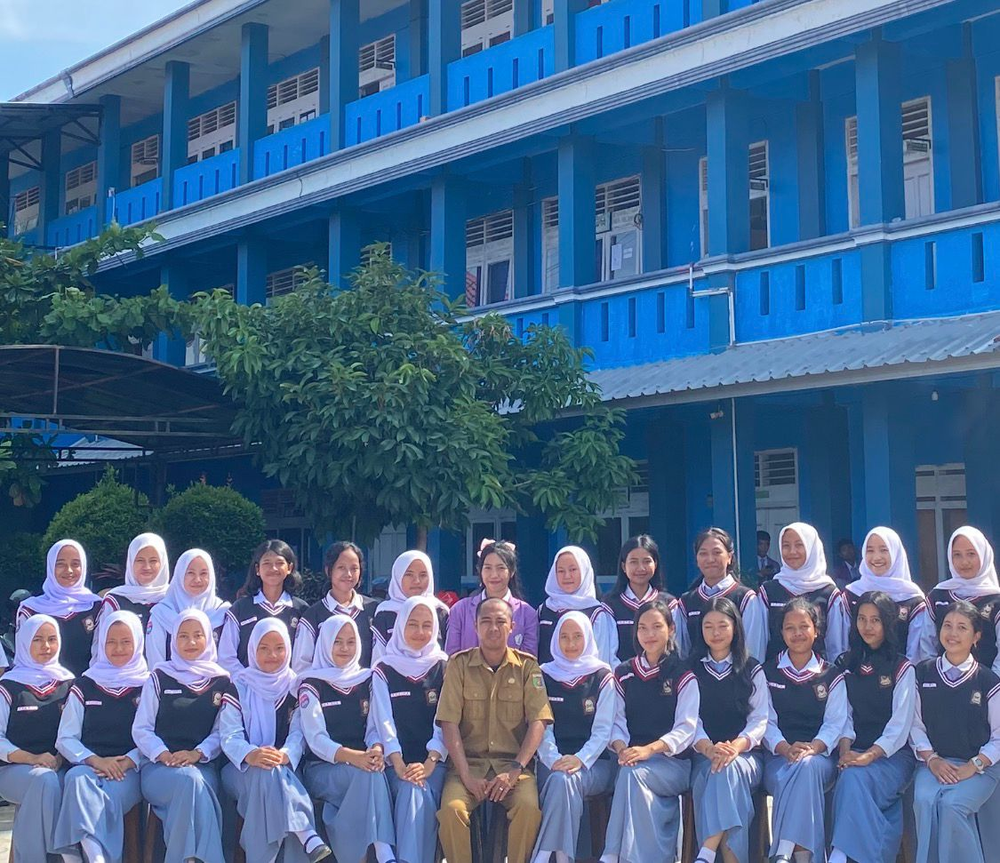

Perjalanan ke Bromo dimulai pukul 3 pagi dengan menaiki jip di tengah udara yang sangat dingin. Saya merasa sangat excited saat menunggu matahari terbit di Penanjakan. Ketika langit mulai berubah jingga, pemandangan Gunung Bromo yang diselimuti kabut putih terlihat sangat megah dan indah.
Setelah melihat sunrise, saya melanjutkan petualangan ke Lautan Pasir dan mendaki kawah Bromo. Meskipun melelahkan, rasa lelah itu hilang seketika saat melihat kawah dari dekat. Pengalaman ini benar-benar berkesan dan menjadi salah satu momen liburan terbaik saya.
BERLIBUR KE PULAU DEWATA
Tepat sebelum mengikuti kegiatan pkkmb saya dan saudara perempuan saya memutuskan untuk berlibur ke bali ke tempat tante saya kami kesana dengan menaiki bus.
Sesampainya kami di bali, kami di sambut baik oleh tante dan om.
Kami merasa sangat senang karena bisa main lagi ke bali pulau dewata dengan sejuta keindahan, akhirnya kami bisa melihat keindahan pulau tersebut lagi.
Pada saat kami berlibur di bali, kami mengunjungi air terjun yang berada di sana .
Kami sangat terpukau melihat keindahan air terjun tersebut, suasana tempat yang sejuk dan pemandangan air terjun beserta hutan di sampingnya yang sangat indah.
KESERUAN PKKMB
Pada saat kegiatan pkkmb saya berangkat dengan teman baru, kami berangkat jam 5 subuh dari tangerang menuju depok dengan menggunakan gocar.
Saat itu saya merasa sangat excited mengikuti kegiatan tersebut.
Sesampainya saya di kampus Gunadarma depok, tepatnya tempat yang menjadi kegiatan pkkmb berlangsung saya langsung di bagi kelompok oleh kakak panitia.
Saya berusaha agar bisa akrab dengan teman kelompok pkkmb.
Saya berbincang dan menikmati berbagai kegiatan Bersama teman baru saya di tempat tersebut.
YoO Bf-!
Pada awal kuliah saya berangkat menggunakan gojek ke kampus, sesampainya di sana saya langsung naik ke gedung 1 dimana tempat tersebut adalah tempat yang pertama kali menjadi ruang kelas saya.
Saat saya memasuki ruang kelas, saya bertemu dengan orang-orang baru.
Saya berusaha untuk bisa akrab dengan mereka saya saat itu saya memberanikan diri untuk memulai perbincangan dengan mereka.
Setelah saling mengenal, kami pun mulai berteman baik .
Saya sangat senang karena bisa berteman baik sampai saat ini.
ASIKNYA PLAYTOPIA
Pada saat liburan natal dan tahun baru saya dan teman-teman memutuskan untuk pergi main ke playtopia yang berada di jakarta kami kesana dengan menaiki kereta.
Setelah turun dari kereta kami memesan grab untuk bisa menuju tempat tersebut.
Kami merasa sangat excited karena kami sudah membayangkan betapa serunya bermain di tempat tersebut.
Pada saat sampai di tempat tersebut , kami langsung masuk dan bermain disana .
Tempatnya cukup luas dan banyak permainan yang bisa kami mainkan, membuat kami sangat senang dan ini menjadi pengalaman yang berkesan untuk kami.
PENGALAMAN OSIS
Mengikuti kegiatan OSIS merupakan pengalaman yang sangat seru dan berharga bagi saya. Saya belajar banyak hal baru, mulai dari cara bekerja sama dalam tim hingga mengatur sebuah acara sekolah agar berjalan lancar. Meskipun terkadang terasa lelah karena harus pulang lebih lambat untuk rapat, saya merasa sangat senang karena bisa menambah banyak teman dan melatih kepercayaan diri saya. Momen ini benar-benar memberikan banyak pelajaran hidup yang tidak saya dapatkan di dalam kelas.

KEGIATAN MELASTI
Pada saat hari raya nyepi, di lampung saya mengikuti berbagai rangkaian kegiatan yang diadakan pada saat itu.
Kegiatan pertama yang saya ikuti adalah Melasti.
Melasti adalah suatu kegiatan sembahyang bersama di tepi danau. Kegiatan ini dilakukan sebelum hari raya nyepi, tepatnya sebelum hari pengerupukan dan nyepi. Banyak orang yang mengikuti kegiatan tersebut.
Saya pergi ke danau bersama kedua adik saya dan kedua orang tua saya.
Saya sangat menikmati udara di tepi danau tersebut, karena udaranya asri dan sangat sejuk. Kami pun mengikuti kegiatan tersebut sampai selesai.
MENGARAK OGOH-OGOH
Setelah kegiatan melasti keesokan harinya di lanjutkan dengan kegiatan pengerupukan, kegiatan yang saya tunggu-tunggu.
Kegiatan ini merupakan kegiatan mengarak ogoh-ogoh .
Sebelum mengarak ogoh-ogoh kami melakukan persembahyangan di perempatan bersama yang di pimpin oleh pemangku.
Setelah melakukan persembahyangan , baru dilanjutkan dengan mengarak ogoh-ogoh .
Setelah ogoh-ogoh di arak, kami pulang sejenak untuk melakukan persembahyangan di rumah masing-masing, tepat pada saat puku 6 sore, ogoh-ogoh di bawa ke kuburan untuk di bakar.
PURA BALI
Berkunjung ke pura-pura di Bali selalu memberikan ketenangan tersendiri bagi saya. Saya sangat kagum melihat arsitektur gerbangnya yang megah dan ukiran batu yang sangat detail di setiap sudut bangunan. Suasana semakin terasa magis saat melihat pura yang terletak di pinggir pantai atau di atas tebing, terutama ketika matahari mulai terbenam. Keindahan alam yang menyatu dengan warisan budaya ini benar-benar membuat saya merasa damai dan selalu ingin kembali lagi ke Pulau Dewata.
STUDY TOUR
Momen paling berkesan saat study tour adalah ketika kami berhenti di sebuah rumah makan untuk sarapan bersama. Sambil menikmati hidangan hangat, kami disuguhi pemandangan gunung yang sangat indah dan megah tepat di depan mata. Suasana rumah makan yang asri dengan udara pegunungan yang segar membuat momen makan pagi itu terasa sangat istimewa. Kami pun asyik mengobrol dan berfoto bersama teman-teman dengan latar belakang gunung sebelum melanjutkan perjalanan.